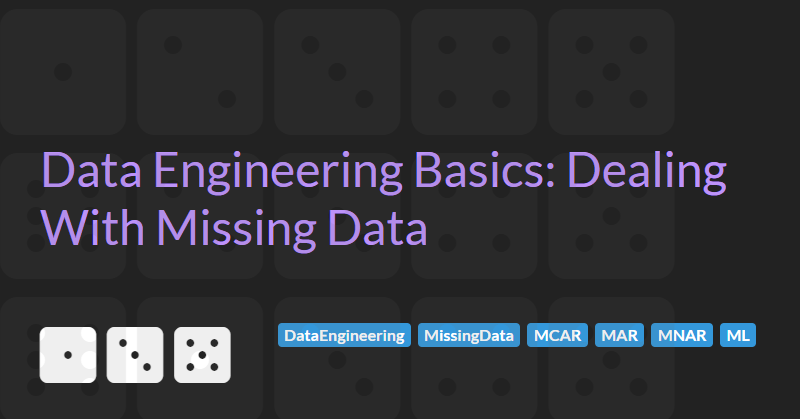

Data Engineering Basics: Dealing With Missing Data
In the world of data engineering, missing data is not an exception - it is an inevitable reality. Whether you are working with customer surveys, IoT sensor readings, or enterprise data pipelines, encountering incomplete datasets is almost guaranteed. Left unaddressed, missing data can compromise the quality of analytics, skew machine learning models, and disrupt downstream processes.
Handling missing data is not just about patching gaps - it is about understanding why the data is missing and determining the best way to manage it. Is the missing data random, or does it reveal a deeper pattern? Should you delete, impute, or model it? The answers to these questions depend on the type of missingness and the context of the dataset.
This article dives into the nuances of dealing with missing data in data engineering. We’ll explore the different types of missingness, the challenges they create, and practical strategies for handling them at scale. Whether you’re building ETL pipelines, managing data quality, or optimising machine learning workflows, this guide will equip you with the knowledge and tools to turn missing data from a problem into an opportunity for insight.
What is Missing Data?
Missing data refers to the absence of a value in a dataset where one is expected. It is a common occurrence in data engineering, arising from various reasons such as system errors, manual omissions, or unrecorded measurements. Understanding missing data is critical because its presence can distort analysis, skew machine learning models, and lead to poor decision-making if not handled appropriately.
Not all missing data is the same. To effectively manage it, it’s important to categorize it based on the reason for its absence. Missing data is typically classified into three main types: Missing Completely at Random (MCAR), Missing at Random (MAR), and Missing Not at Random (MNAR).
Missing Completely at Random (MCAR)
In MCAR scenarios, the missingness of the data is entirely independent of both observed and unobserved data. The absence of data has no discernible pattern or relationship to other values in the dataset.
For example, during a medical survey a technical glitch may have caused random questions to go unanswered by some respondents.
MCAR is the least problematic type of missingness because the missing values do not introduce bias. Simple solutions like ignoring the missing data or basic imputation techniques are often sufficient.
Missing at Random (MAR)
In MAR scenarios, the probability of missingness is related to other observed variables but not the value of the missing data itself.
For example, older respondents in a medical survey are less likely to report their income, but income is unrelated to their health outcomes. We classify this as MAR because:
- The probability of income being missing depends on an observed variable (age).
- The missingness is not directly tied to the missing value (income) or any other unobserved variables.
MAR is more complex to handle than MCAR but can often be managed using advanced imputation techniques, leveraging the observed variables to predict and fill in the missing values.
Missing Not at Random (MNAR)
In MNAR scenarios, the missingness is directly related to the value of the missing data itself, or to unobserved factors.
For example, patients with severe symptoms might be more likely to skip reporting their condition due to embarrassment. We classify this as MNAR because:
- The likelihood of not reporting symptoms increases as the severity of the symptoms increases.
- In this case, the value of the missing data (symptom severity) is directly influencing whether or not the data is missing.
- If we look at other variables, such as patient demographics or medical history, they don’t explain the missingness. For example, both younger and older patients might skip reporting severe symptoms, meaning the missingness is not related to an observed variable like age or gender.
MNAR is the most challenging type of missingness because it introduces systematic bias. Handling MNAR often requires additional domain knowledge or external data sources to model the missingness effectively.
Understanding these types of missing data is the foundation for deciding how to handle them in your data pipelines. Each type requires a different approach, and misclassification can lead to incorrect assumptions and flawed analyses. The next sections will explore the challenges missing data creates and how to effectively address them in data engineering workflows.
The Challenge of Missing Data
Missing data introduces significant challenges across data pipelines, analytics, and machine learning workflows. They can often compromise the reliability and accuracy of insights. These challenges can cascade throughout systems, creating disruptions that are both costly and difficult to resolve.
Two key areas where missing data can lead to problems are in data pipelines and data modelling.
Data Pipelines
In data pipelines, missing values can break workflows by causing schema mismatches, type errors, or unexpected null values in transformations. For instance, if a pipeline processing customer transaction data encounters rows with missing fields, it may fail to load into downstream databases, halting critical business processes.
Additionally, missing data can propagate through interconnected systems, leading to corrupted downstream datasets. For example, a missing revenue figure in a source system could result in flawed financial reports or inaccurate KPIs. Addressing these issues often requires complex error-handling logic, increasing development time and system maintenance overhead.
Data Modelling
In data modelling, whether predictive analytics or machine learning models, the impact of missing data is equally profound. Missing values reduce the usable dataset size, which can lead to unrepresentative analysis. For example, in a marketing campaign, missing income data for a particular demographic might result in skewed customer segmentation, misinforming future strategies.
Similarly, machine learning models trained on incomplete data are prone to bias and underperforming when deployed in real-world scenarios. A model predicting loan defaults could incorrectly classify applicants if those with high default probabilities have missing credit scores. Furthermore, missing data complicates feature engineering by introducing noise and calculating averages or aggregations from incomplete datasets often leads to misleading results.
Handling Missing Data
Effectively managing missing data is crucial for maintaining the quality and integrity of your datasets. The process begins with identifying missing values, diagnosing their cause, and then selecting the appropriate techniques to handle them. Depending on the type of missingness (MCAR, MAR, or MNAR) the approach can vary significantly.
Identifying Missing Data
The first step in handling missing data is to identify where and how data is missing. In Pandas, this can be done using the isna() or isnull() functions.
It can be confusion that these two functions that do exactly the same thing, but if we check the source code of Pandas we can see that isnull() is just an alias for isna(). As a best practice, I always prefer to use isna() over isnull(). In Pandas there are other similar method names like dropna() and fillna() that handles missing values and it always helps to remember easily.
import pandas as pd
# Sample data
data = {'age': [25, 30, None, 40, 50],
'income': [50000, None, 60000, 70000, 80000]}
df = pd.DataFrame(data)
# Identify missing values
missing_data = df.isna()
print(missing_data)
The output will highlight where the None values (missing) are located in the dataset. You can also use df.isna().sum() to get a quick summary of how many missing values exist in each column.
Diagnosing the Cause of Missing Data
Diagnosing the cause of missing data is critical for determining the best approach to handle it. As we discussed earlier, missing data can be classified into three categories:
- MCAR (Missing Completely at Random): Missing data is unrelated to other observed or unobserved values.
- MAR (Missing at Random): Missingness is related to observed data but not to the missing data itself.
- MNAR (Missing Not at Random): Missingness depends on the value of the missing data itself or other unobserved factors.
Understanding the cause will help guide your decisions on whether to impute, drop, or flag missing data. This often involves data exploration, visual analysis, or domain expertise to spot patterns.
Example Test Data
In the following sections we will define some tests for detecting whether data is missing completely at random. To evaluate these tests we will use two data sets
First we generate a base data set with random age and income columns where income is correlated with age (i.e. the older the person the more likely they will have a higher income)
import random
# Generate 100 samples of ages and incomes where income is correlated with age (with some variance)
min_age, max_age, number_of_samples = 20, 80, 100
ages = [random.randint(min_age, max_age) for _ in range(number_of_samples)]
min_income, max_income, income_variance = 30000, 80000, 10000
income_range = max_income - min_income
age_range = max_age - min_age
min_base_income, max_base_income = min_income - income_variance, min_income + income_variance
incomes = [
int(random.randint(min_base_income, max_base_income) + (((age - min_age) / age_range) * income_range))
for age in ages
]Now we can create a DataFrame with 10% of the income values randomly removed. This will be our baseline DataFrame for testing when we expect data to be missing completely at random.
# Set 10% of the values to None (missing) randomly
ten_percent_of_incomes = int(0.1 * len(incomes))
random_indices = random.sample(range(len(incomes)), ten_percent_of_incomes)
randomly_null_incomes = [None if i in random_indices else income for i, income in enumerate(incomes)]
df_randomly_missing_incomes = pd.DataFrame({'age': ages, 'income': randomly_null_incomes })Finally we create a second DataFrame where 70% of the income values over £70,000 are randomly removed. This will be our DataFrame for testing when we expect data not to be missing completely at random (since higher incomes are correlated to higher age because of the way we've defined our data).
# Set 70% of the values over 70,000 to None - indicating some correlation between age and missing income
indices_over_70000 = [i for i, income in enumerate(incomes) if income > 70000]
seventy_percent_of_incomes_over_70000 = int(0.7 * len(indices_over_70000))
random_indices_over_70000 = random.sample(indices_over_70000, seventy_percent_of_incomes_over_70000)
randomly_null_incomes_over_70000 = [None if i in random_indices_over_70000 else income for i, income in enumerate(incomes)]
df_randomly_missing_high_incomes = pd.DataFrame({'age': ages, 'income': randomly_null_incomes_over_70000 })
Detecting MCAR with t-tests
A t-test can be used to assess whether missing values in a dataset are missing completely at random by comparing the distributions of observed and missing data for a specific variable. The general idea is to test whether the presence of missing data in one variable is independent of another variable's value, suggesting randomness.
Here is an implementation of the test in Python that allows us to test whether missing data is correlated with a particular column:
from scipy.stats import ttest_ind
def mcar_t_tests(dataset: pd.DataFrame, target_column: str, mcar_threshold = 0.05) -> pd.DataFrame:
"""
Performs t-tests for MCAR for a give column
"""
column_names = list(df.columns)
column_names.remove(target_column)
mcar_results = pd.DataFrame(
columns=["t_stat", "p_value", "is_mcar", "sample_too_small"],
index=column_names,
)
observed_rows = dataset[dataset[target_column].notna()]
missing_rows = dataset[dataset[target_column].isna()]
for paired_column in column_names:
group_observed = observed_rows[paired_column].dropna()
group_missing = missing_rows[paired_column].dropna()
if len(group_observed) > 1 and len(group_missing) > 1: # Ensure enough data
t_stat, p_value = ttest_ind(group_observed, group_missing, equal_var=False)
mcar_results.loc[paired_column] = [ t_stat, p_value, p_value > mcar_threshold, False ]
else:
mcar_results.loc[paired_column] = [ 0.0, 0.0, False, True ]
return mcar_resultsUsing this test for the income column is straight-forward. For our df_randomly_missing_incomes DataFrame we can simply:
print(mcar_t_tests(df_randomly_missing_incomes, "income"))Which should output something like this:
t_stat p_value is_mcar sample_too_small
age 0.364443 0.722076 True False
Note the t_stat and p_value number might be different if you run this due to the randomness of the input. The important thing here is that is_mcar should return True to indicate our random data is truly completely random.
We can evaluate our df_randomly_missing_high_incomes DataFrame in a similar way:
print(mcar_t_tests(df_randomly_missing_high_incomes, "income"))Which results in:
t_stat p_value is_mcar sample_too_small
age -8.983374 0.0 False False
Again, your numbers may vary but is_mcar should return False to indicate our data is not completely random and there is some correlation between income and age.
The t-test assumes normality and equal variances between groups. If these assumptions are violated, the test's results might be inaccurate.
This approach only provides indirect evidence for MAR and doesn't conclusively establish it. For a robust assessment, you might also consider other techniques like Little's MCAR test, which specifically tests for MCAR.
Little's MCAR Test
Little's MCAR test is used to assess whether data is Missing Completely at Random (MCAR). The test evaluates if the probability of missing data is independent of the observed data values. If the test result is non-significant (i.e., p-value > 0.05), it suggests that the data is MCAR.
Here is an implementation of the test in Python:
from scipy.stats import chi2
def little_mcar_test(data : pd.DataFrame) -> float:
"""
Implementation of Little's MCAR test
Parameters
----------
data : pd.DataFrame
Dataset with missing values
Returns
-------
pvalue : float
The p-value of a chi-square hypothesis test.
A p-value > 0.05 suggests that missing values in the column are
likely MCAR.
"""
overall_means = data.mean()
variances = data.var()
chi_squared_stat = 0
degrees_of_fredom = 0
pattern_groups = data.groupby(data.apply(lambda row: tuple(row.isna()), axis=1))
for pattern, group in pattern_groups:
observed_columns = ~np.array(pattern)
group_means = group.mean()
residuals = group_means[observed_columns] - overall_means[observed_columns]
group_size = len(group)
group_variance = variances[observed_columns]
chi_squared_contribution = np.sum((group_size * (residuals ** 2)) / group_variance)
chi_squared_stat += chi_squared_contribution
degrees_of_fredom += len(observed_columns.nonzero()[0]) - 1
p_value = 1- chi2.cdf(chi_squared_stat, degrees_of_fredom)
return p_valueUsing this test is straight-forward. For our df_randomly_missing_incomes DataFrame
p_value = little_mcar_test(df_randomly_missing_incomes)
print(f"Missing values are likely missing completely at random"
if p_value > 0.05 else
f"Missing values are not missing completly at random")We get the result:
Missing values are likely missing completely at random
As expected (since we randomly set incomes to missing) the output of the MCAR test is:
And for our df_randomly_missing_high_incomes DataFrame
p_value = little_mcar_test(df_randomly_missing_high_incomes)
print(f"Missing values are likely missing completely at random"
if p_value > 0.05 else
f"Missing values are not missing completly at random")We now get the expected output:
Missing values are not missing completly at random
Handling MCAR Missing Data
For data that is Missing completely at random (MCAR), you can often drop the rows or columns with missing values without introducing significant bias into your analysis, as MCAR data does not show systematic patterns.
# Drop rows with any missing values
df_cleaned = df.dropna()
print(df_cleaned)Alternatively, if the missing values are few and dropping them won't result in losing too much data, you might choose to impute the missing values with the column mean, median, or mode.
# Impute missing values with the column mean
df['age'] = df['age'].fillna(df['age'].mean())
df['income'] = df['income'].fillna(df['income'].mean())
print(df)This results in the following output. Note that the missing age is calculated as 36.25 and the missing income value is calculate as 60000.0
age income
0 25.00 50000.0
1 30.00 65000.0
2 36.25 60000.0
3 40.00 70000.0
4 50.00 80000.0
Since MCAR data is random, these simple methods typically suffice without introducing bias.
Handling MAR Missing Data
When data is Missing at random (MAR), imputing missing values based on other observed variables is often the best approach. Techniques like regression imputation or k-nearest neighbours (KNN) imputation are commonly used.
# Imputation using linear regression
from sklearn.linear_model import LinearRegression
# Sample data
data = {'age': [25, 30, 35, 40, 50],
'income': [50000, None, 60000, 70000, 80000]}
df = pd.DataFrame(data)
# Assuming we are imputing 'income' based on 'age'
model = LinearRegression()
# Drop rows with missing 'income' and use 'age' to predict 'income'
train_data = df.dropna(subset=['income'])
X_train = train_data[['age']]
y_train = train_data['income']
model.fit(X_train, y_train)
# Predict missing 'income' values
df.loc[df['income'].isnull(), 'income'] = model.predict(df.loc[df['income'].isnull(), ['age']])
print(df)# Imputation using KNN
from sklearn.impute import KNNImputer
# Sample data
data = {'age': [25, 30, 35, 40, 50],
'income': [50000, None, 60000, 70000, 80000]}
df = pd.DataFrame(data)
# Use 2 nearest neighbors to fill missing data.
knn_imputer = KNNImputer(n_neighbors=2)
df[['age', 'income']] = knn_imputer.fit_transform(df[['age', 'income']])
print(df)Handling MNAR Missing Data
Handling Missing Not at Random (MNAR) data is the most challenging, as the missingness is related to the value of the missing data itself or some unobserved factor. The best approach often requires domain expertise or external data to model the missingness properly. However, one common strategy is to impute with a constant or create a separate indicator variable to flag the missingness.
# Create a flag for missing 'income' data
df['income_missing'] = df['income'].isnull().astype(int)
# Impute 'income' with a constant or domain-based value
df['income'] = df['income'].fillna(0)
print(df)Another strategy is Multiple Imputation by Chained Equations (MICE), which accounts for uncertainty in the missing data by creating multiple plausible imputations.
from sklearn.experimental import enable_iterative_imputer
from sklearn.impute import IterativeImputer
data = {
'age': [25, 30, None, 40, 50],
'income': [50000, 60000, None, 70000, 80000],
'bmi': [22.5, 24.0, 23.5, None, 27.0]
}
df = pd.DataFrame(data)
# Apply MICE to impute missing values. Note: MICE works only on numeric data
mice_imputer = IterativeImputer()
df_imputed = df.copy()
df_imputed.iloc[:, :] = mice_imputer.fit_transform(df)
print(df)
print(df_imputed)Conclusions
Handling missing data is a critical skill for data engineers, as its impact ripples across pipelines, analytics, and machine learning models. By identifying the type of missingness (MCAR, MAR, or MNAR), diagnosing its root cause, and applying suitable techniques like imputation, flagging, or advanced machine learning models, you can ensure data integrity and robustness.
Modern tools such as Pandas and scikit-learn make it easier to address missing data systematically. However, the best approach depends on the specific use case, data structure, and the downstream application.
In practice, handling missing data is not a one-size-fits-all task. It requires a deep understanding of the data, domain knowledge, and iterative experimentation. Embracing best practices and leveraging scalable solutions ensures your data pipelines are resilient and your insights reliable.